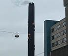
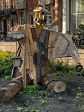
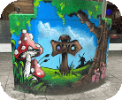

Initiatief
Schoorsteen

op de Camperstraat hebben ze een industrieel gebouw opgefleurd met bloemen. Dit bracht mij aan het denken waarom ze zoiets vervuildends toch iets groener proberen te laten lijken.
Houtbot
Street art is niet alleen beperkt tot Graffiti. In dit werk op de Sarphatistraat zijn voorwerpen die je langs de weg kan vinden samengezet tot een nieuw recycled kunstwerk, en laat het zien dat je geen nieuwe voorwerpen nodig hebt voor een kunstwerk.
Bloembakken
Op deze bloembak op de 1e Oosterparkstraat vind je een grote paddenstoel in een bos. Het is misschien niet compleet legaal, maar toch brengt het de natuur een beetje terug naar Amsterdam.
